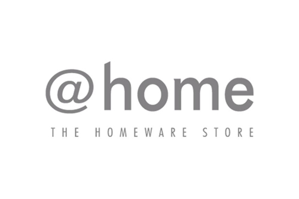
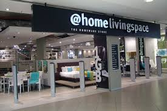
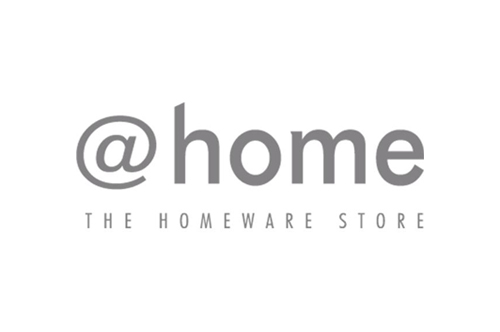
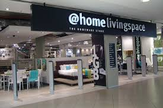

@HOME
The @home team has been involved in building homes in Cape Town in 2017 and Johannesburg and Durban in 2018 in partnership with Habitat for Humanity South Africa. Other initiatives supported by Heart of @home since launching included extensive support of the Knysna fire relief efforts, as well the skills development project, Hands of Hope in Cape Town, which supports female former inmates on parole with skills development and employment opportunities. The handmade picnic cooler bags made by these women were sold at @home stores.
WHERE CAN YOU FIND US?
First floor, opposite Incredible Connection